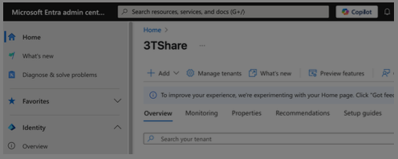

Day 2-1 Pre-provisioned Mode¶
I. Theory¶
1/ What is autopilot user-driven mode
Autopilot User-Driven Mode lets end users set up their devices themselves with minimal IT involvement. After turning on the device and signing in, the device automatically joins the organization, enrolls in Intune, and applies company policies — ready for use.
- 2/ When do we use user-driven mode
- The Device will be delivered directly to the end users without IT intervention
Requires no interaction from IT team/OEM/reseller.
The device will be used primarily by a single user
- Doesn’t require [TPM attestation](https://learn.microsoft.com/en-us/windows-server/identity/ad-ds/manage/component-updates/tpm-key-attestation) so works on physical devices and VMs.
Because user-driven does not require TPM so we can leverage this mode to test enrollment status or creating VMs for testing an autopilot process
II. Deployment¶
Step 1: Set up Windows automatic Intune enrollment
1/ Sign in to the [EntraID](https://entra.microsoft.com)
2/ In the EntraID screen > search the keyword MDM and WIP > click on MDM and WIP
3/ In Mobility (MDM and WIP) > **choose **Microsoft Intune

4/ In Microsoft Intune
4.1/ MDM user scope
check All

4.2/ Windows Information Protection(WIP) user scope
Check None

5/ After setting like the picture above select > Save
Step 2: Allow users to join devices to Microsoft Entra ID
1/ Sign in to the [Microsoft Entra ID.](https://entra.microsoft.com)

2/ In the EntraID screen, under Identity in the left hand pane, select Devices.

3/ In the Devices | Overview screen, under Manage in the left hand pane, select Device Settings.

4/ In the Devices | Device settings screen that opens, under Users may join devices to Microsoft Entra, select All

5/ Save
Step 3: Create a device group
Create a dynamic device group for use with Windows Autopilot
1/ Sign into the [Microsoft Intune admin center](https://go.microsoft.com/fwlink/?linkid=2109431).

2/ In the Intune Admin Portal > select Groups > All groups

3/ In the Groups | Overview screen > make sure All groups is selected, and then select New group.

3/ In the New Group screen that opens:
For Group type, select Security.
For Group name, enter a name for the device group [All Autopilot Device]
For Group description > skip
For Microsoft Entra roles can be assigned to the group, select No.
For Membership type, select Dynamic Device.
For Owners > skip
For Dynamic device members, select Add dynamic query. The Dynamic membership rules screen opens.

4/ In the Dynamic membership rules screen
4.1/ at the Rule syntax box > select edit at the top-right hand side

4.2/ Paste in the following rule in the Edit rule syntax screen under Rule syntax
(device.devicePhysicalIDs -any (_ -startsWith “[ZTDid]”))

4.3/ Once the rule is pasted in, select OK.
4.4/ Once the desired rule is entered, select Save on the toolbar to close the Dynamic membership rules window.

5/ Select Create to finish creating the dynamic device group.

6/ Wait until the notification is successful

- Step 4: Configure and assign Windows Autopilot Enrollment Status Page (ESP)
*What is ESP*
ESP is often configured to wait for only specific apps (instead of all), so users can get to the desktop faster. But then pre-provisioning “completes” after those apps are installed. It will continue installing apps until reseal is pressed though. The new option [*only fail selected blocking apps in technician phase*] allows both scenarios - fast user ESP, but all apps installed in preprov ESP.
Note that
There is a cool feature in the preprovisoning process. In the ESP setting, you can now select the “*only fail selected blocking apps in technician phase*” to YES. If you do so, during the preprovisoning phase, Windows will try to install ALL required software, not only the ESP blocking one, allowing you to fully prepare your devices. Works good so far for our company.
A. Upload A Package App
1/ Visit the link here: [Zoom Installers](https://support.zoom.com/hc/en/article?id=zm_kb&sysparm_article=KB0060407)
2/ Download Zoom workspace desktop app for Meeting (64bit)- MSI Installer Or using the link here: https://zoom.us/client/latest/ZoomInstallerFull.msi?archType=x64

3/ Sign in to the [Microsoft Intune admin center](https://go.microsoft.com/fwlink/?linkid=2109431).
2/ Select Apps > Apps | Overview > Windows.

3/ In Windows | Windows Apps > select Create

4/ In the Select app type pane, under the Other app types, select Line-of-business app.

4/ Select Select. The Add app steps are displayed.

5/ In the Add app pane, select Select app package file.

6/ Upload the ZoomMSI file downloaded recently, select OK

7/ In App information > select Next
Name: Zoom
Description: skip
Publisher: Zoom
App install context: Device
Ignore app version: No
Command-line arguments: /qn
Upload Logo
The other fields: skip


8/ At the scope tags screen > select Next

9/ At the Assignments screen > Assign to the desired group > select Next
9.1/ At the Required header > select add group

9.2/ Enter [All Autopilot Device] > Check box > click Select

9.3/ Ensure the target group is there > select Next

10/ At the review + Create tab > select create

11/ Wait until the uploading zoom is completed

12/ uploading process is successful

B. Create ESP Profile
1/ Sign into the [Microsoft Intune admin center](https://go.microsoft.com/fwlink/?linkid=2109431).
2/ In the Home screen, select Devices in the left hand pane.

3/ In the Devices | Overview screen, under Manage devices by platform, select Windows.

4/ In the Windows | Windows devices screen, under Device onboarding, select Enrollment at the left pane side.

5/ In the Windows | Windows enrollment screen, under Windows Autopilot, select Enrollment Status Page.

6/ In the Enrollment Status Page screen that opens, select Create.

7/ The Create profile screen opens. In the Basics page:
Next to Name, enter [ESP - Autopilot User-Driven Mode]
Next to Description, skip
Select Next.

8/ In the Settings page, toggle the option Show app and profile configuration progress to Yes.

8.1/ After toggling the setting to Yes > configure these settings following
Show an error when installation takes longer than specified number of minutes: 60
Show custom message when time limit or error occurs: Yes
in the box message: [Installation exceeded the time limitation set by your organization. Please try again or contact your IT support person for help]

8.2/ After entering the message > turn on these settings below
Turn on log collection and diagnostics page for end users: Yes
Only show page to devices provisioned by out-of-box experience (OOBE): Yes
Block device use until all apps and profiles are installed: Yes
Allow users to reset device if installation error occurs: Yes
Block device use until required apps are installed if they are assigned to the user/device: Selected

8.2/ After choosing [selected] mode > click on +select apps

8.3/ At the Select apps > search Zoom > Click on Zoom and select

8.3/ Ensure Zoom is listed in the Blocking apps list > select Next

8.4/ After adding Zoom, at [Only fail selected blocking apps in technician phase] > Select No > then select Next

9/ at Assignment tab > click add groups

9.1/ At the select groups to include
Search [All autopilot device]
Check box and click Select

10/ Ensure the target group is listed in the list > select Next

11/ At the scope tags > select Next

12/ At the Review and create tab > select Create

13/ Waiting until the notifications shows [profile successfully created /assigned]

- Step 5: Create and assign Windows Autopilot profile
Sign into the [Microsoft Intune admin center](https://go.microsoft.com/fwlink/?linkid=2109431).
In the Home screen, select Devices in the left hand pane.

In the Devices | Overview screen, under By platform, select Windows.

In the Windows | Windows devices screen, under Device onboarding, select Enrollment.

In the Windows | Windows enrollment screen, under Windows Autopilot, select Deployment Profiles.

In the Windows Autopilot deployment profiles screen, select the Create Profile drop down menu and then select Windows PC.

- The Create profile screen opens. In the Basics page:
Next to Name: [DeployProfile - Autopilot User-Driven Mode**]**
Next to Description
Next.

8.1. In the Out-of-box experience (OOBE) page:
For Deployment mode, select User-driven.
For Join to Microsoft Entra ID as, select Microsoft Entra joined.
For Microsoft Software License Terms, select Hide
For Privacy settings, select Hide

8.2. In the Out-of-box experience (OOBE) page:
For Hide change account options, select Hide.
For User account type, select Administrator.
For Allow pre-provisioned deployment, select No.
For Language (Region): Skip
For Automatically configure keyboard: No
For Apply device name template: UserDr-%SERIAL%
Next

In the Scope Tags tab > Next

- In the Assignments tab
Under Included groups, select Add groups.

select the group that created in the Step 3 [All Autopilot Device]

Next
In the Assignments > Create

Wait until the notification is successful

{kind=link}
III. Admin Workflow¶
Before a device can use Windows Autopilot, the device must be registered as a Windows Autopilot device.
Registering a device as a Windows Autopilot device makes the Windows Autopilot service available to the device.
Note that
a device isn’t currently enrolled Intune
a device registered in Windows Autopilot doesn’t mean the device is enrolled in Intune.
Step 1: Register devices as Windows Autopilot devices
Step 2: Verify device has a Windows Autopilot profile assigned to it
IV. User Workflow¶
Registering a device as a Windows Autopilot device doesn’t mean that the device has used the Windows Autopilot service. It just makes the Windows Autopilot service available to the device.
Step 1: [Deploy the device](https://learn.microsoft.com/en-us/autopilot/tutorial/user-driven/azure-ad-join-deploy-device)